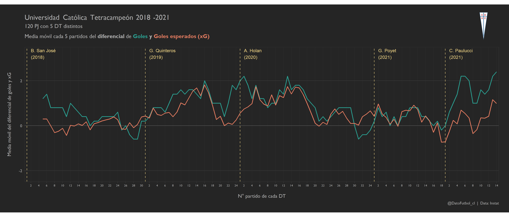

Hace pocos días atrás el Club Deportivo Universidad Católica se coronó campeón del torneo de 1° división AFP Plan Vital 2021, transformándose en el primer club tetracampeón del fútbol chileno considerando torneos anuales, con un total de 120 partidos jugados a lo largo de los 4 torneos disputados entre 2018 y 2021.
Además de lograr el histórico tetracampeonato, un punto llamativo es que lo hizo bajo la dirección técnica de 5 entrenadores (DTs) distintos: Beñat San José, Gustavo Quinteros, Ariel Holan, Gustavo Poyet y Cristian Paulucci; lo que evidencia que el éxito a largo plazo de su proyecto deportivo estuvo respaldado fuertemente por una óptima conformación de plantel y el rendimiento de sus jugadores más allá del DT de turno.
En este artículo se presentan y analizan algunas estadísticas tanto de los DTs como de los jugadores involucrados con tal de describir ciertos elementos relevantes que marcaron este hito en la historia de la UC.
La evolución temporal del rendimiento de los DTS en la UC
El bajo rendimiento de Mario Salas el año 2017, posterior al bicampeonato de 2016, puso su continuidad en duda aun cuando era complejo superarlo en algunos de sus buenos números conseguidos, como por ejemplo la efectividad en “torneos ganados / torneos jugados” respecto a la proporción histórica de la UC (para más detalles revisa este post anterior). Sin embargo, la dirigencia optó por un cambio, lo que marcaría en el inicio del tetracampeonato con llegada del español Beñat San José.
A continuación se presentan 3 gráficos que corresponden a la media móvil cada 5 partidos de distintas métricas con tal de observar su respectiva evolución temporal entre 2018 y 2021. Solo se incluyen partidos por el torneo nacional.
- Evolución de Goles Esperados (xG) a favor y en contra:
B. San José mantuvo un rendimiento regular durante todo el torneo 2018 con valores de xG a favor similares a los valores en contra, sin sacar mayores ventajas en este ámbito.
Por su parte, G. Quinteros y A. Holan destacaron en cuanto a la generación ofensiva a favor además de mantener relativamente baja la generación ofensiva de sus rivales. Si bien ambos tuvieron algunos problemas para sostener tal rendimiento al final de sus respectivos periodos, prácticamente todo el tiempo estuvieron por encima (media móvil de 5 partidos), es decir, con un diferencial de xG positivo.
G. Poyet tuvo altos y bajos tanto a favor como en contra, siendo claramente superado en su etapa final. Así fue como alcanzó el peor xG en contra (acumulado en 5 partidos) de la UC en 4 años, justamente en su último partido en la derrota contra Palestino 0-3.
Paulucci fue más regular que Poyet en la generación ofensiva y logró disminuir la generación de los rivales, especialmente en los últimos partidos.
2) Evolución de Goles a favor y en contra:
Ahora la evolución temporal de los goles a favor y en contra, lo que nos muestra “la historia real” puesto que los valores xG nos presentan lo esperado probabilísticamente según la calidad de las llegadas o qué tan peligrosos fueron los remates realizados (antes de ser ejecutados).
Para los casos de Quinteros y Holan se mantiene la supremacía respecto a sus rivales, aunque Holan tuvo una baja en los últimos partidos. En el caso de B. San José se observa cómo este sacó ventaja en la gran primera rueda que hizo.
Por otro lado, al igual que para los xG, se sigue observando la irregularidad del ciclo de Poyet. Mientras que destaca ampliamente lo logrado por Paulucci con una alta diferencia de gol a favor, igualando los periodos más exitosos de Quinteros y Holan.
- Evolución del Diferencial de Goles y de xG:

Para terminar esta sección, la línea de tiempo del diferencial de ambas métricas, es decir, el diferencial de goles “Goles a favor - Goles en contra” y el diferencial de xG “xG a favor - xG en contra”. Siempre con una media móvil de 5 partidos.
La UC mantuvo una diferencia positiva de goles y xG en gran parte del periodo de 4 años. De hecho Quinteros y Holan mantuvieron siempre un diferencial positivo de xG, así como Paulucci siempre mantuvo la dif. de gol positiva.
Si quieres ver más detalles de la evolución de xG y Goles de la UC partido a partido, revisa este post.
Datos de la Plantilla
Como dije previamente: el tetracampeonato estuvo apoyado fuertemente por la conformación del plantel y el rendimiento de sus jugadores. Por eso a continuación se presentan algunos datos y visualizaciones asociadas a los jugadores con una visión global de estas 4 temporadas.
- Edad, minutos jugados, calidad de extranjero, contribución en torneos nacionales y de goles + asistencias
En primer lugar un gráfico para los 48 jugadores utilizados durante los 4 torneos, indicando datos como la edad, el porcentaje de minutos jugados respecto al total posible, la contribución en torneos nacionales ganados y la contribución de goles + asistencias. Los datos de cada jugador consideran únicamente el periodo que duró su estadia en el club en calidad de jugador profesional. Si un jugador estuvo disponible en al menos 1 partido de alguna temporada, se considera que este fue parte de la misma, lo que aplica tanto para los campeonatos ganados como para calcular el total posible de minutos jugados.
Algunos aspectos relevantes que se desprenden de la visualización:
Se observa una plantilla equilibrada en cuanto a edades y rendimiento.
El 70% (14 de 20) de los jugadores experimentados, mayores de 30 años, participaron en más del 40% de los minutos jugados. En este grupo se concentraron los extranjeros de la plantilla, los cuales en general fueron importantes en cuanto a minutos jugados y contribución de goles y asistencias, a excepción del colombiano D. Riascos. No es una novedad que los extranjeros que han llegado a la UC el último tiempo han rendido.
Al mismo tiempo, hubo un grupo de canteranos menores de 25 años que participaron en más del 45% de los minutos posibles, siendo protagonistas durante varias temporadas: I. Saavedra (68.4%), R. Rebolledo (61.3%), M. Núñez (53.9%), D. Valencia (46.5%) y B. Kuscevic (46.3%). En los casos de Valencia y Núñez además aportaron con una cuota importante de goles y asistencias, 29 (4° del equipo) y 24 (7° del equipo) respectivamente.
En el rango de 25 a 30 años destaca principalmente Valber Huerta, quien fue el jugador de la UC con mayor % de minutos jugados respecto al máximo posible (97.1%). En este rango luego vienen J. Leiva, A. Vilches y C. Pinares con más del 40% de los minutos posibles. De algún modo, este es el rango etario que menos aportó al tetracampeonato.
En el panorama general, luego de Huerta, hubo solo 5 jugadores con más del 70% de los minutos jugados: F. Zampedri (95.2%), S. Pérez (84.9%), L. Aued (83.3%), M. Dituro (81.0 %) y J. Fuenzalida (78.3%). Dentro de este grupo de 6 jugadores hay 2 arqueros, 3 jugadores extranjeros, 3 jugadores que estuvieron en las 4 temporadas (Aued, Dituro y Fuenzalida), además de que están los 3 jugadores que aportaron con más goles y asistencias en el tetracampeonato: Zampedri (48), Fuenzalida (42) y Aued (34).
Solo 8 de los 48 jugadores utilizados permanecieron durante las 4 temporadas entre 2018 y 2021 (con al menos un partido en cada una de ellas), lo que indica una renovación constante del plantel. De los 40 restantes, 8 jugadores participaron en 3 temporadas, 17 en 2 temporadas y 15 en solo 1 temporada. Del grupo que partició en solo 2 temporadas destacan Zampedri, Núñez, Pinares, Sáez y Lezcano; mientras que en el grupo que jugó una temporada destacan Pérez, Voboril, Leiva, Vilches y Gutiérrez.
- Minutos jugados y goles + asistencias cada 90 minutos respecto al promedio del equipo en cada posición
A continuación, para complementar, se incluye un par de visualizaciones que indican A) total de minutos jugados y B) la contribución de goles + asistencias cada 90 minutos comparada con el promedio del equipo en cada posición del campo de juego. Para esto se considera el esquema táctico más utilizado: 4-3-3 con un volante defensivo y dos ofensivos, correspondiente al 62% de los casos. Se incluyen solo aquellos jugadores que participaron en al menos el 30% de los minutos jugados posibles durante su estadia como jugadores profesionales en el club.
La mayoría de las posiciones fueron ocupadas y/o disputadas principalmente por 2, 3 o 4 jugadores, considerando que las posiciones de volante ofensivo (VO) y defensa central (DC) tienen 2 cupos cada una. La única excepción fue la posición de puntero derecho (PD), dado que tuvo la mayor rotación con 5 jugadores bastante parejos en cantidad de minutos jugados en total.
Las posiciones con mayor concentración de minutos fueron la portería (PO) donde M. Dituro jugó gran parte del tetracampeonato, el puesto de DC donde Huerta y Lanaro predominaron y la posición de volante defensivo (VD) donde jugó principalmente I. Saavedra.
Destaca la versatilidad de J. Fuenzalida ocupando los puestos de lateral derecho (LD) y PD, también el caso de D. Valencia que jugó de delantero centro (DEL) y PD, además de D. Buonannote que aportó como VO y PD y L. Aued que jugó tanto de VO como de VD.
La posición de lateral izquierdo (LI) fue principalmente disputada por A. Parot y J. Cornejo, mientras que el puesto de puntero izquierdo (PI) lo ocupó E. Puch gran parte del tiempo.
En el segundo gráfico, a continuación, el color representa el aporte en goles y asistencia (normalizado cada 90 minutos jugados) comparado con el promedio del equipo en cada posición, de modo que podemos ponderar la participación (minutos jugados) con el aporte y/o efectividad de goles y asistencias mientras jugaron. Esto es por supuesto una evaluación cuantitativa de un solo aspecto ofensivo del juego.
Es así como es posible confirmar que los minutos jugados de Puch, Zampedri y Fuenzalida (como LD), fueron justificados dada su importante contribución. Por otro lado, los casos de Lezcano, Saez, Valencia (como DEL) y las facetas ofensivas de Saavedra, Aued, Huerta, Lanaro y Parot pudieron ser mejor o bien la oportunidad pudo ser mejor aprovechada por otros, tales como Astaburuaga en la posición de DC, Gutiérrez, Pinares y Núñez como VO, Llanos como DEL, Fuenzalida, Buonanotte y Valencia como PD o Lobos como VD.
Acá surgen algunas preguntas como por ejemplo ¿Por qué no continuaron D. Llanos y C.Lobos? o ¿Por qué se le dieron tantos minutos jugados a Lezcano? Por supuesto el análisis debe considerar otras variables y factores como lesiones u otras razones extra futbolísticas pudieron incidir. El caso de Lezcano podría tener sustento en la métrica xG + xA cada 90 minutos (ver tabla al final) donde tiene mejores números.
También aparecen algunos indicios de algunas posiciones en las que debiera reforzarse la UC de cara al próximo año: LI, PI y VD son las posiciones que podrían mejorar desde un punto de vista ofensivo (asumiendo que Fuenzalida, Valencia y Zampedri renuevan contrato).
Finalmente, una tabla con las principales estadísticas de los 31 jugadores que participaron en al menos el 30% de los minutos posibles a lo largo del tetracampeonato de la UC: